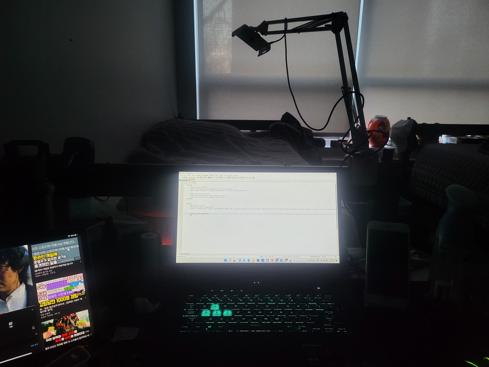

I didn't know what to do with the second page topic for this page, so I wrote a little diary.
I thought it was a diary and wrote this page, but to be honest, I just wrote what I wanted to say.
I'm not sure what the last topic will be, so I'll keep a diary with today's date. Today's date is January 27, 2022. The current weather is winter, and as we all know, the weather is very cold. Today's minus 5 degrees, compared to yesterday's minus 16 degrees... I think it's really warmed up a lot. The current time is 5 PM. I finished the lab 3 assignments and started the project. First of all, I wrote down the topic 'Professional resume' that I must write down. The subject was mainly told when I was in high school in China. At that time, the Chinese class was very difficult, but even now, my head hurts just thinking about it. To be honest, the diary I am writing now is the second topic. The last topic is still undecided what to do with it. A more serious problem is that I'm not sure if this way I'm doing the task is right. Maybe you should watch the lecture video again. There was nothing more to be written about. Oh, come to think of it, it snowed a lot outside. It is very rare to see so much snow in my hometown of Korea, except in rural areas. Seeing the snow piled up a lot seemed to heal my mood. It was almost evening time. I'm not hungry. Because I ate a lot at lunch. Maybe that's the reason, my stomach is starting to hurt right now. I'm sorry if I write something too detailed and it's uncomfortable to read, but I really can't think of what to write on this page. The moment I thought of this, I thought I wrote down quite a bit, so I'll check it out.
As a result of checking once, it was still insufficient. I'm going to try to write a little bit more because it's not expected that even including images will be enough to fill the desktop. I just checked once and was thirsty, so I bought a Coke from the vending machine installed in the basement. You can drink water, but today I wanted to drink Coke. It felt sweet and stinging in the throat. By the way, it is said that the weather will be much warmer tomorrow. It is said to be about 10 degrees higher. That's great news. It was always a pain to go to the restaurant to eat. My hometown, Korea, has rarely been this cold. Adapting to the cold weather wasn't easy, but seeing the snow piled up outside is just amazing.
It's been quite some time. While I was writing this, I took a break in the middle and started watching YouTube, but the time passed really easily. It's already dark outside. Now, while I am writing this, I am contemplating what to do with the other topic. Originally, I was going to make this page like this diary the last page, but I couldn't come up with a topic, so I'm writing this for the second time. Originally, I was going to make a page to introduce Korea, but after thinking about it, I decided that Google could explain it more easily and in detail than I did, so I gave up. At this point, I think I've filled the page enough, so I'll just finish this diary.